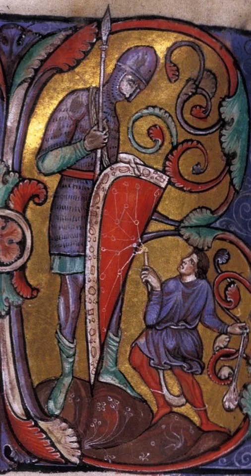

Место учёбы
Фундаментальная и компьютерная лингвистика, НИУ ВШЭ, Москва
Студентик-лингвистик, недопрограммист и немножко лесная хтонь

Фундаментальная и компьютерная лингвистика, НИУ ВШЭ, Москва
Санкт-Петербург!!
Аничков Лицей
• Люблю научпоп, историю, путешествия.
• Люблю древние языки, фэнтези, русскую классику и вообще читать.
• Прочёл всего Толкина.
• Люблю людей и их истории.
• Взял Всеросс по русскому в 11-м.
• Немного учу польский.
• Когда-то держал свой сервер.
• Сигурд взял сердце Фафнира и стал поджаривать его на палочке.